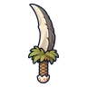

ไดโนขโมยไข่ · ร่างขนชมพู
มอนธาตุดิน Lv 90–98
เจอที่
| แมพ | โซน | Lv | ภูมิภาค |
|---|---|---|---|
| ผารังเทอโรซอร์ | 90–98 | ที่ราบสูง |
ค่าสถานะตามเลเวล
| Lv | HP | ATK | DEF | MDEF | EXP | Job |
|---|---|---|---|---|---|---|
| 90 | 137,325 | 263–394 | 39 | 14 | 219 | 164 |
| 94 | 154,434 | 283–424 | 41 | 14 | 228 | 171 |
| 98 | 172,303 | 304–455 | 42 | 15 | 238 | 179 |
ตีด้วยธาตุไหนดี
แรงขึ้น: ไฟ ×1.5 พิษ ×1.25
เบาลง: ลม ×0.5 ดิน ×0.25
วัตถุดิบที่ดรอป
| ของ | โอกาส | |
|---|---|---|
| ขนหงอนไดโน | 82% | 1 ชิ้น (15% ได้ 2) |
อุปกรณ์ที่ดรอป (1)
| ของ | โอกาส |
|---|---|
 มีดคู่ไดโนขโมยไข่ | 0.5% |
สกิล
แอ่ง (Lv 25+) · แอ่ง (Lv 60+) · ปาตกใส่ (Lv 60+)